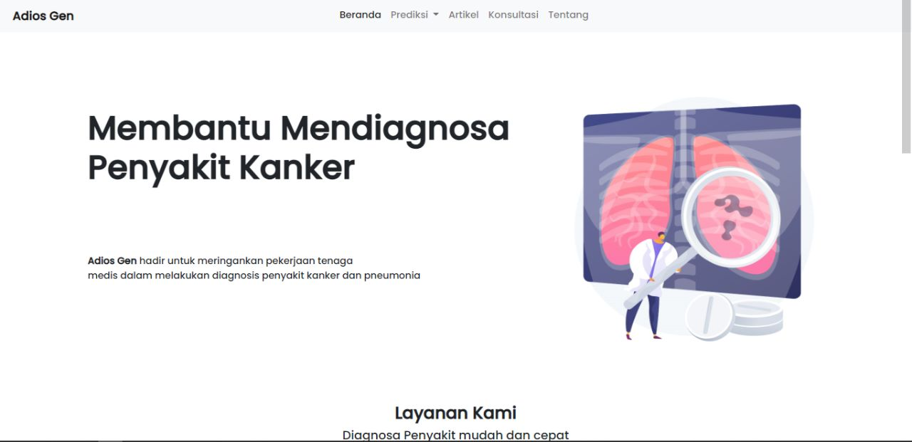
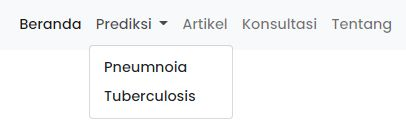
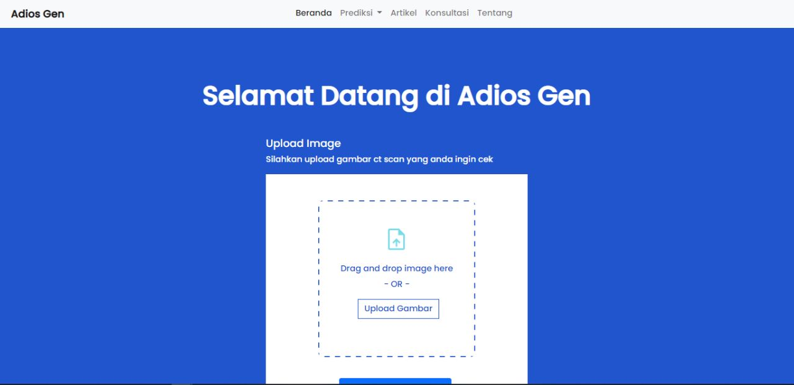
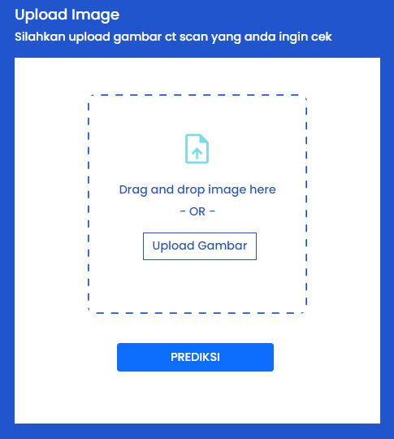
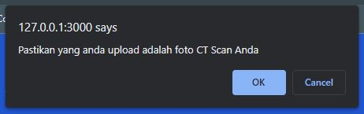
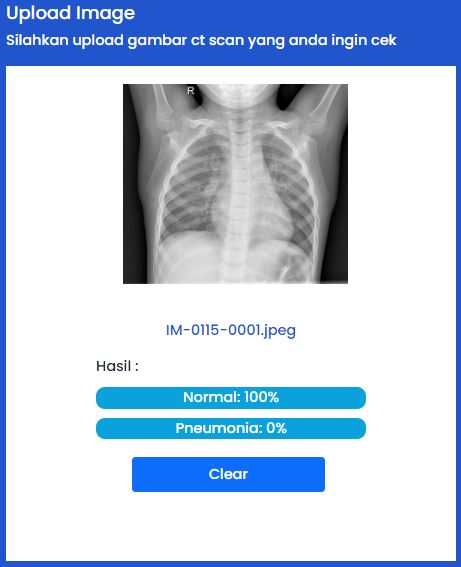

Semua yang anda harus ketahui sebelum menggunakan Adios Gen
langkah pertama yang harus anda lakukan adalah menyiapkan gambar dari x-ray yang akan anda gunakan dalam prediksi dan pastikan gambar yang anda sediakan memiliki kualitas yang tinggi sehingga prediksi bisa dilakukan dengan maksimal. Langkah selanjutnya adalah masuk ke halaman utama dari Adios Gen
Langkah selanjutnya pergi ke menu diatas dan pilih diantara 2 pilihan sesuai kebutuhan anda
Jika anda sudah meilih salah satu dari menu prediksi maka anda akan diperlihatkan halaman berikut
Langkah selanjutnya adalah kita akan mengunggah gambar x-ray yang sudah kita persiapkan diawal untuk kita prediksi. Klik tombol upload gambar lalu pilih gambar x-ray yang sudah anda siapkan
Klik OK pada papan peringatan lalu tampilan anda akan seperti berikut dan sudah siap untuk melakukan prediksi pada gambar x-ray yang sudah anda siapkan
Tunggu untuk beberapa saat untuk prediksi bekerja lalu anda akan mendapatkan hasil dari prediksi yang dilakukan oleh Adios Gen seperti gambar dibawah ini
